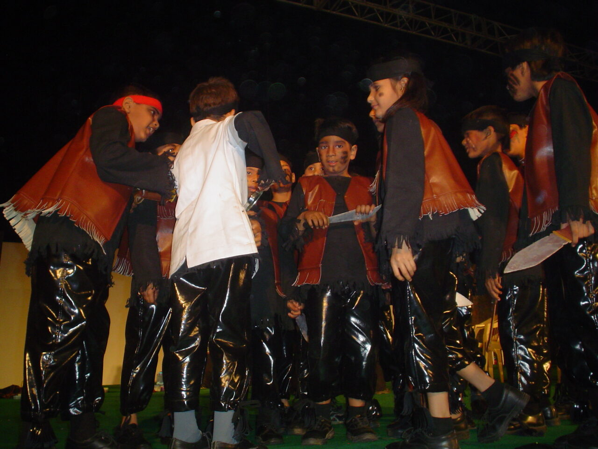

For Kids & Parents
Where Young Performers
Find Their Voice
Acting training for children is not about making them perform, it is about helping them discover themselves.
Drawing from his years with Imago Theatre, Imago Theatre-in-Education — Barry John's company — and Yellow Cat Theatre Company, founded by Sukhesh Arora, Pushpendra brings a uniquely sensitive, inclusive and joyful approach to training young performers. His work has included children and participants who were blind, deaf, non-verbal, or living with physical and neuromotor disabilities.
The training is built specifically for screen — films, OTT and other image media — alongside organic, game-based exploration. Safe, nurturing and deeply professional.
Pushpendra takes on children's coaching selectively — in collaboration with filmmakers and production houses working with young performers, and with theatre groups and educators looking to introduce children to screen.
